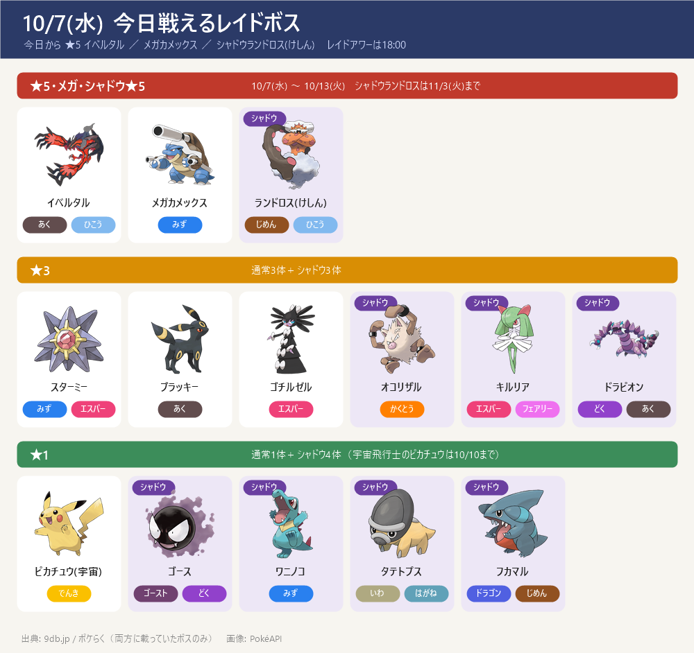
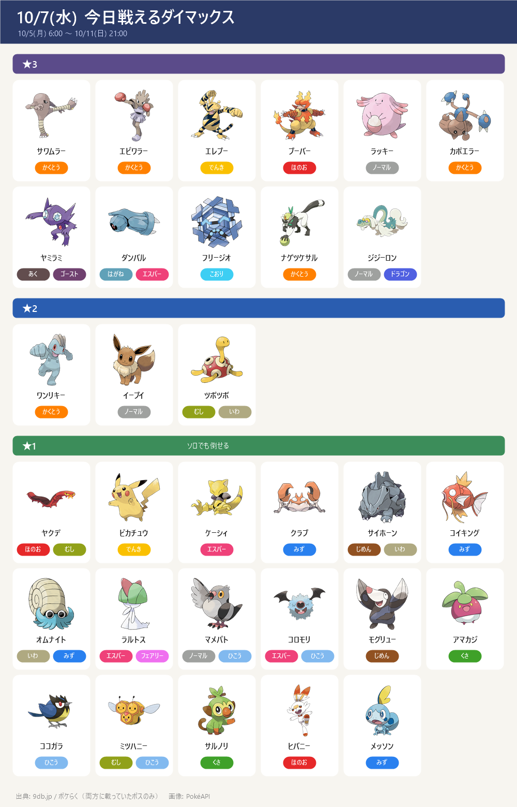
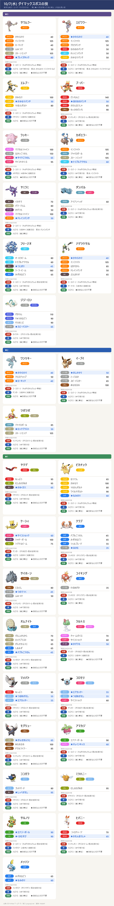
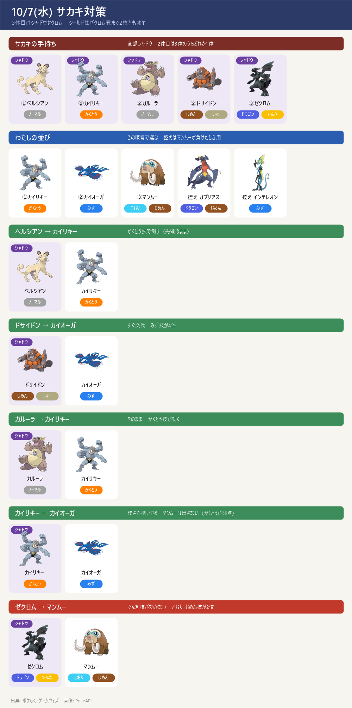
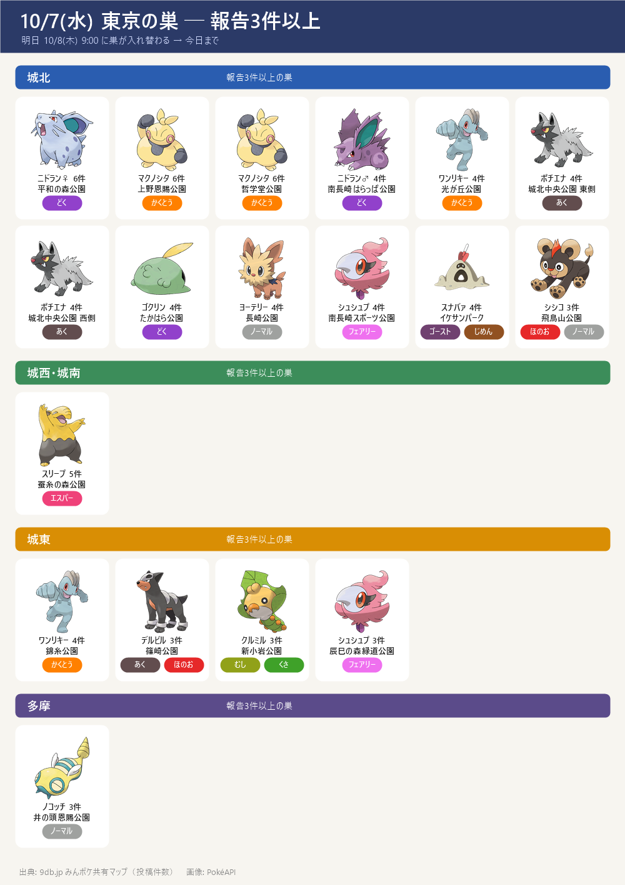

今日のポイント
- 今日 18:00～19:00 レイドアワー：イベルタル
- イベルタル（あく・ひこう）→ でんき・こおり・いわ・フェアリー技が有効
- 今日 5:00 から レイドボスが入れ替わり
- ★5 イベルタル ／ メガカメックス（みず → でんき・くさ技）／ シャドウランドロス(けしん)（じめん・ひこう → こおり技が4倍、みず技も有効）
- イベルタルとメガカメックスは 10/13(火) まで、シャドウランドロスは 11/3(火) まで
- GOパス：収穫祭 の報酬受け取りは 今日 10/7(水) 20:00 まで
- 取り残しがないかGOパス画面で確認（2個目のスーパーロケットレーダーもここ）
- サカキに挑戦中ならレーダーを道具から起動（相手はシャドウゼクロム → こおり・じめん・ドラゴン・フェアリー技）
- 明日 10/8(木) 18:00～19:00 スポットライトアワー：リグレー（アメ2倍）
- 世界宇宙週間は10/10(土)まで：★1レイドの宇宙飛行士のピカチュウ ／ GOパス：10月は 11/3(火) 10:00まで
今日戦えるレイドボス
今日から ★5 イベルタル ／ メガカメックス ／ シャドウランドロス(けしん) レイドアワーは18:00

今日戦えるダイマックス
10/5(月) 6:00 ～ 10/11(日) 21:00
- ※★3・★2は先週と同じ顔ぶれ。★1にヤクデ（10/5のマックスマンデー）が加わった。ここに載せたのは2サイトで一致したボスだけ。9db.jp には ★1 にほかにも多数、★2 にホエルコ・ヒンバス・ダルマッカ、★3 にモノズ・タイレーツも載っている
- 【各ボスのスペシャルアタック候補】（下のカード。数字はレイド・マックスバトルでの威力。★＝ボスが使ってくると楽な、いちばん弱い技（ボスと同じタイプの技は1.2倍で計算。こちらのポケモンとの相性は見ていない）。戦闘中に技名が出たら受け役を合わせる）


サカキ対策（シャドウゼクロム）

- サカキの手持ち（10/2〜）：①ペルシアン（ノーマル）→ ②カイリキー／ガルーラ／ドサイドンのどれか → ③シャドウゼクロム（ドラゴン・でんき）
- ゼクロムの弱点：じめん・こおり・ドラゴン・フェアリー。じめんタイプは、でんき技が効かないので特に安定
- 並び（この順番）：①カイリキー → ②カイオーガ → ③マンムー（控え：ガブリアス）
- ペルシアン → カイリキーのかくとう技で倒す
- 2体目がドサイドン → すぐカイオーガに交代（みず技が4倍）
- 2体目がガルーラ → カイリキーのまま
- 2体目がカイリキー → カイオーガで受けて倒す（マンムーはかくとうが弱点なので出さない）
- ゼクロム → マンムー（でんき技が効かない・こおりもじめんも2倍）。ガブリアスはドラゴン技を2倍で受けるので控え
- シールド：2枚ともゼクロム戦まで残す。サカキも2枚持っているので、最初は早く撃てるゲージ技でシールドを使わせる
- 理想の技：マンムー＝こなゆき／ゆきなだれ・10まんばりき カイリキー＝カウンター／ばくれつパンチ・クロスチョップ カイオーガ＝たきのぼり／なみのり・ハイドロポンプ ガブリアス＝マッドショット／じしん
- 再戦：同じ場所のサカキなら、負けても手持ち（2体目・技）は変わらない。負けたら2体目を見て組み直して何度でも挑める（レーダーは消えない）。別の場所のサカキだと変わることがある
- 2個目のレーダー：GOパス収穫祭デラックス（700円）のランク報酬（ゲーム内でランク2と確認）。受け取りは今日 10/7(水) 20:00まで。レーダーは2個以上持てる（上限は見当たらない）。ただし起動中だと受け取れない場合があるので、受け取る前に今のレーダーを「解除」しておくと安全
東京の巣（今日まで）

- 9db（みんポケ共有マップ）の東京都の巣：36種・のべ96か所・報告158件（今日 10/7 の昼に取得）
- 巣は明日 10/8(木) 9:00 に入れ替わる（隔週木曜・9db の開催一覧）→ この一覧は今日まで。明日以降は報告が集まるまで数日かかる
- 見方：件数＝その場所で見たという投稿の数。3件以上はほぼ確実、1件だけの巣は見間違いや一時的な出現のこともある。同じ公園に2種ある所（篠崎公園・猿江恩賜公園・中野四季の森公園・こどもの広場公園）は公園の中の場所で分かれている
- まとめて回るなら中野〜南長崎：平和の森公園（ニドラン♀ 6件）→ 哲学堂公園（マクノシタ 6件）→ 南長崎はらっぱ公園（ニドラン♂ 4件）・南長崎スポーツ公園（シュシュプ 4件）・豊島区立長崎公園（ヨーテリー 4件）。確かな巣が5つ、直線でおよそ3km の範囲。足を延ばせばイケサンパーク（スナバァ 4件）
- 色違い：36種すべて色違いが出るポケモン（9db の色違いマーク）
- この先の予定とのつながり：ヌイコグマは 10/15(木) のスポットライトアワー（送るとアメ2倍）の対象。巣はお台場海浜公園と殿ヶ谷戸庭園（各1件）だが、巣は明日入れ替わるので当日はスポットライトアワーで集めるほうが確実
- 天気でブースト（その天気のとき巣で出やすく・強くなる）：曇り＝マクノシタ・ニドラン♀♂・ワンリキー・シュシュプ・ゴクリン・ピッピ／雨＝コダック・ケムッソ・シママ・クルミル・アゴジムシ／晴れ＝ドンメル・モグリュー・シシコ／強風＝ケーシィ・スリープ・バネブー／霧＝ポチエナ・ムウマ
- エリア別の全リスト（ポケモン：場所(件数)。太字は3件以上）
- ■城北（中野・豊島・練馬・板橋・北・上野） 19か所
- マクノシタ：上野恩賜公園(6)・哲学堂公園(6)
- ポチエナ：城北中央公園 東側(4)・城北中央公園 西側(4)
- ニドラン♀：平和の森公園(6)
- ニドラン♂：南長崎はらっぱ公園(4)・中野四季の森公園(1)
- スナバァ：イケサンパーク(4)・中野四季の森公園 イベントエリア(1)
- ワンリキー：光が丘公園(4)
- ゴクリン：たかはら公園(4)
- ヨーテリー：豊島区立長崎公園(4)
- シュシュプ：豊島区立南長崎スポーツ公園(4)
- シシコ：飛鳥山公園(3)
- モグリュー：おとめ山公園(2)
- ケーシィ：南池袋公園(1)
- タマタマ：徳殿公園(1)
- ケムッソ：江古田の森公園(1)
- エモンガ：江原公園(1)
- ■城西・城南（杉並・世田谷・目黒・大田） 16か所
- スリープ：蚕糸の森公園(5)
- フシデ：中目黒公園(1)・和田堀公園ゲートボール場(1)・東山公園(1)
- デルビル：世田谷公園(1)・中根公園(1)
- ピッピ：二子玉川公園(1)
- サイホーン：下高井戸おおぞら公園(1)
- ヤンヤンマ：こどもの広場公園 西側(1)
- ケムッソ：砧公園(1)
- ドンメル：善福寺川公園(1)
- スカンプー：蘆花恒春園(1)
- シママ：こどもの広場公園 東側(1)
- モグリュー：柏宮公園(1)
- チラーミィ：田園調布せせらぎ公園(1)
- アゴジムシ：大蔵運動公園(1)
- ■都心・湾岸 9か所
- ケーシィ：潮風公園(1)
- コイル：新宿御苑(1)
- タマタマ：新宿中央公園(1)
- ムウマ：代々木公園(1)
- バネブー：北の丸公園(1)
- スカンプー：日比谷公園(1)
- ユキカブリ：浜離宮恩賜庭園(1)
- シシコ：皇居外苑(1)
- ヌイコグマ：お台場海浜公園(1)
- ■城東（江東・墨田・江戸川・葛飾・荒川） 19か所
- ワンリキー：錦糸公園(4)・大島小松川公園 わんさか広場(1)
- クルミル：新小岩公園(3)・水元公園(2)
- デルビル：篠崎公園(3)
- シュシュプ：辰巳の森緑道公園(3)
- コイル：猿江恩賜公園 南側(1)・辰巳の森緑道公園 西側(1)
- スリープ：海の森公園(1)・葛西臨海公園(1)
- ヤンヤンマ：辰巳の森海浜公園(2)
- キャタピー：アクロシティ庭園(1)
- タマタマ：亀戸中央公園(1)
- ノコッチ：高砂北公園(1)
- シママ：葛飾あらかわ水辺公園(1)
- モグリュー：猿江恩賜公園 北側(1)
- フシデ：汐入公園(1)
- エモンガ：篠崎公園(1)
- スナバァ：にいじゅくみらい公園(1)
- ■多摩 33か所
- タマタマ：大塚公園(1)・清瀬金山緑地公園(1)・西河原自然公園(1)・野川公園(1)
- ノコッチ：井の頭恩賜公園(3)・北山公園(1)
- ミツハニー：都立狭山公園(2)・一本杉公園(1)・上之根公園(1)
- ニドラン♀：多摩中央公園(1)・桝形公園(1)・秋留台公園(1)
- スナバァ：富士森公園(2)・小平市立中央公園(1)
- コダック：東村山中央公園(2)
- ゴクリン：芹ヶ谷公園(1)・草花公園(1)
- ヨーテリー：乞田・貝取ふれあい広場(1)・片倉城址公園(1)
- シュシュプ：武蔵野の森公園(1)・立川公園(1)
- アゴジムシ：仲田の森蚕糸公園(1)・武蔵野公園(1)
- キャタピー：府中の森公園(1)
- コイル：町田中央公園(1)
- デルビル：小金井公園(1)
- ポチエナ：豊ヶ丘北公園(1)
- ケムッソ：東大和南公園(1)
- バネブー：日野市民の森スポーツ公園(1)
- シママ：町田シバヒロ(1)
- フシデ：立野公園(1)
- エモンガ：上仲原公園(1)
- ヌイコグマ：殿ヶ谷戸庭園(1)
この先の予定
- 10/7(水) 20:00 GOパス：収穫祭 の報酬受け取り期限
- 10/8(木) 18:00～19:00 スポットライトアワー：リグレー（アメ2倍）
- 10/10(土) 14:00～17:00 コミュニティデイ：ゾロア ／ 世界宇宙週間 終了
- 10/11(日) 21:00 マックスバトルのボス入れ替わり
- 10/12(月) マックスマンデー：ココガラ（時刻はサイトで違う → 下記）
- 10/13(火) おひろめデイ 10:00～20:00 ／ 秋の遠足：相棒といっしょ 10:00～10/19(月)
- 10/13(火) 21:00 イベルタル・メガカメックスのレイド終了
- 10/14(水) ～ ★5 ディアルガ ／ メガカイリュー（10/20(火)まで）
- 10/14(水) 18:00～19:00 レイドアワー：ディアルガ
- 10/15(木) 18:00～19:00 スポットライトアワー：ヌイコグマ（送るとアメ2倍）
サイトで違っていた点
- ゲームウィズのレイド一覧は今朝の時点で先週の顔ぶれのまま → 今日のレイドは 9db とポケらくで照合
- ★3・★1 の終了日は 9db のレイド日程だけに「10/10(土) 21:00」とある → 参考まで
- ★3・★1 のどれがシャドウかはポケらくの表記による（9db でも同じ顔ぶれ）
- マックスマンデー ココガラの時刻: 9db は 6:00～21:00、攻略大百科は 18:00～19:00 → ゲーム内で確認を
- 秋の遠足の終了時刻（10/19 20:00）は 9db のみ
- ダイマックスボスの技候補はゲームデータ(PvPoke)から（おんがえし・やつあたりは除外）、威力は pogoapi.net
- 東京の巣は 9db（みんポケ共有マップ）の投稿だけをもとにしている（ユーザー指定）。他サイトとは照合していない。巣の入れ替わり 10/8 9:00 も 9db のみ
出典: 9db.jp/pokemongo（開催イベント一覧・レイド日程・マックスバトル日程）／pokemon.gamepedia.jp/go（攻略大百科 今月のイベント）／pokemongo-raku.com（レイドボス一覧・マックスバトル）／pokemongo.gamewith.jp（GOパス）／pvpoke.com ゲームデータ（技候補）／9db.jp みんポケ共有マップ（東京都の巣）
画像: PokéAPI ／ 2サイト以上で一致した情報だけを載せています（巣は 9db のみ）